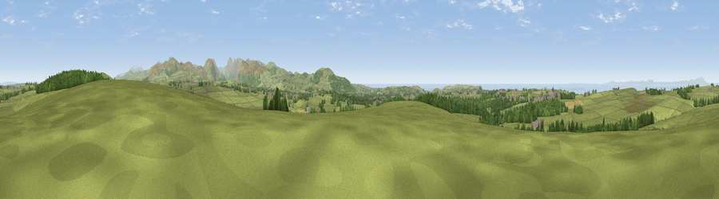

Viewpoint near Moresby Parks
#4495 in England · top 38% of its area beats it · near Moresby ParksWhere it is
The exact computed spot (NY 02038 19150). Click the marker for map links.
The view, rendered

A 360° render of this exact spot computed from the terrain model, tree cover and land cover — summer colours, afternoon light, calibrated against photographs of famous viewpoints. Real trees, hedges and buildings will differ in detail.
The panorama
Grey silhouette: terrain skyline in each direction (720 bearings, Earth curvature and refraction included). Dashed green: skyline with trees (+15 m) and buildings (+8 m) as obstacles. Blue strip: how far the ground is visible on each bearing.
Where the view opens
Wedge length = distance to the farthest visible ground on that bearing (vegetation-aware). Rings at 10, 25 and 50 km.
What fills the view
70% grassland · 17% woodland · 8% water · 2% built-up · 2% cropland
Angular shares of the visible panorama (visual magnitude), not map area. Landscape diversity 0.40 (0–1 Shannon).
Key numbers
More beautiful places nearby
The staircase of upgrades: each row has a higher view potential than everything closer. Driving times are estimates from straight-line distance, calibrated against real road routing — check an actual route before setting out.
| Place | Direction | Drive | Score |
|---|---|---|---|
| Viewpoint near Low Moresby | NW · 3 km | ~6 min | 71.9 |
| Viewpoint near Low Moresby | NW · 3 km | ~6 min | 76.5 |
| Viewpoint near Moresby Parks | W · 3 km | ~8 min | 78.8 |
| Viewpoint near Cleator | SSE · 6 km | ~13 min | 86.1 |
| Crag Fell | ESE · 9 km | ~18 min | 89.1 |
| Ullock Pike | ENE · 24 km | ~40 min | 89.4 |
| Long Side | ENE · 25 km | ~40 min | 89.5 |
| Viewpoint near Finsthwaite | SE · 48 km | ~69 min | 90.3 |
54.55807, -3.51634 · source: screening · position refined by local search. Computed location — check access rights before visiting.